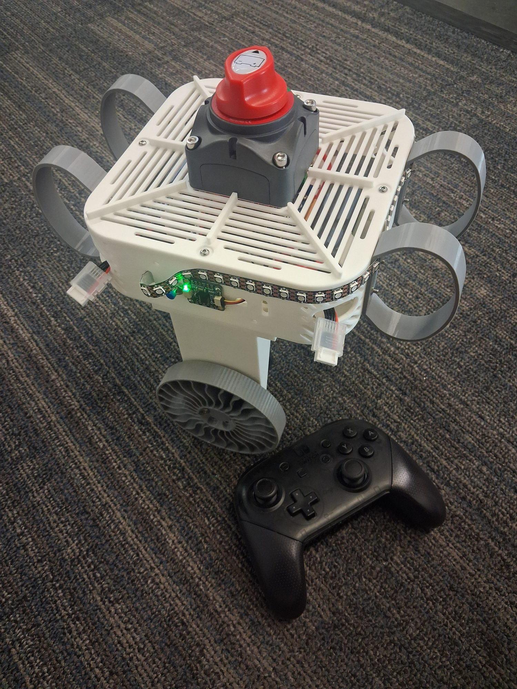
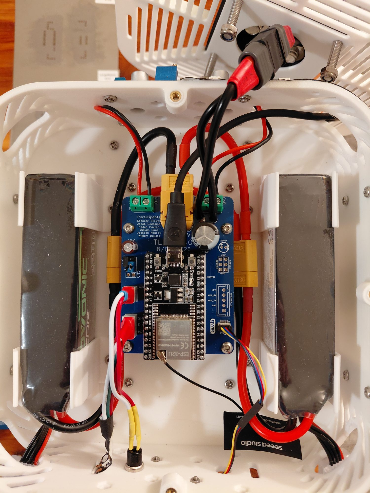
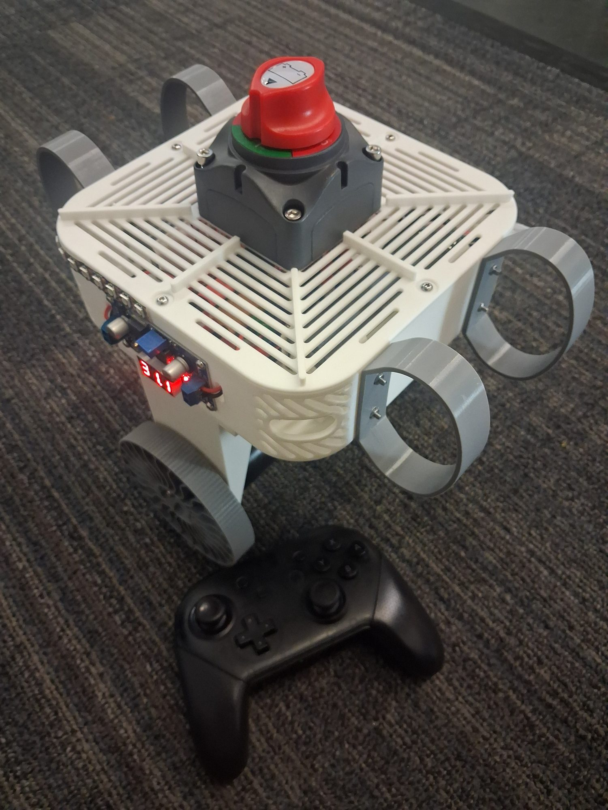

Independent build / Controls & mechatronics
TLDR
A wheel-driven inverted-pendulum platform progressing toward a legged robot—designed, wired, and programmed end to end.
Two-wheel chassis-pitch stabilization
Six BLDC motors on one CAN bus
Legged hardware nearing assembly
My role / Method
Balance first.
Then walk.
TLDR is a personal robotics platform. The current two-wheel stage stabilizes chassis pitch as an intermediate step toward a legged system; the legged configuration has not yet been validated. I built it solo, from mechanical design through electronics and control.
- Mechanical design. Designed every mechanical component, including an offset bearing and motor-mounting interfaces that reduce axial moments on the BLDC motors.
- Custom PCB and CAN network. Worked from datasheets to bridge the ESP32’s TWAI controller to the motors’ CAN Classic bus, adding an SMD CAN transceiver to my own PCB. The board has communicated with six motors at once.
- Control and estimation. Wrote the onboard PD pitch controller. A lightweight filter currently estimates pitch; a Kalman filter is planned for the final version. Firmware interfaces were developed with AI-assisted coding.
- Wiring and integration. Hand-built all wiring and harnesses.
- Digital twin. Wrote the MuJoCo model of the robot for simulation alongside hardware testing.
Skills developed & implemented
Evidence from
this project.
- Mechanical design for motor load paths
- PCB design & CAN bus integration
- PD control & state estimation
- Embedded firmware (ESP32)
- Wiring harness fabrication
- MuJoCo simulation
Current hardware
Inside
the build.
The two-wheel build and its internal electronics. The last image shows every PCB I’ve designed, including several FidgiTech modules, arranged roughly chronologically to show how my board design has progressed up to TLDR V1.0.




Hardware documentation
PCB
schematic.
Scroll within the viewer to inspect the complete schematic without leaving the project record.
Next iteration
From wheels
to legs.
Next steps are assembling the legged hardware, replacing the pitch filter with a Kalman filter, and publishing MuJoCo digital-twin media alongside hardware results.